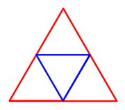
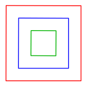
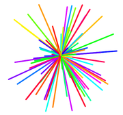
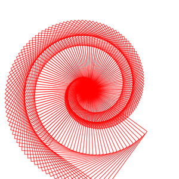
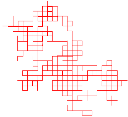

CS 124, Fall 2021
Lab 7: Introduction to Subroutines
We have just begun Chapter 4, which is mostly about subroutines. You have already used subroutines, such as System.out.println() and g.fillRect(). Now, you need to learn how to write them and to design programs that use them. In this lab, you will use another set of subroutines—ones that implement "turtle graphics"—and you will write a few subroutines of your own. The subroutines are relatively simple. There is not a lot of algorithm design work in this lab.
Although this lab uses graphics, it does not use JavaFX. Behind the scene, it uses the older Java graphics system called "Swing." You don't have to do anything special to compile and run a program that uses Swing.
The files that you need for this lab can be found in /classes/cs124_Eck/lab7-files, or download the files using the links on this page. You will probably want to create a new Eclipse file for this lab. You should copy-and-paste the .java files individually into the src folder of the project. Note that they should all be the default package, not in a named package.
You will need copies of two files, TurtleGraphics.java, and Turtle.java. You will only work on TurtleGraphics.java. Do not make any changes to Turtle.java. The file Turtle.java defines some subroutines that you will use. Turtle.java has to be in your project for TurtleGraphics to work, but you do not need to understand how it works. Do NOT make any changes to Turtle.java.
You will probably also want a copy of TurtleExample.java; that file is not required for the lab, but it has some examples of drawing using turtle graphis. TurtleExamples.java is a main program, and you can run it to see what it draws, and you can read the source code to see how it uses turtle graphics to make the drawings.
There is no lab next week because of Fall Break. Your work for this lab is due in two weeks, at the lab on October 19. To submit your work, it is enough to copy TurtleGraphics.java into your homework folder.
About the Turtle
This program uses turtle graphics. You should imagine a turtle moving around in a window on the screen, dragging a pen that draws a line as the turtle moves. In the program, the turtle is represented by the class named Turtle. This class contains static subroutines that represent commands to the turtle, telling it how to move. For example, Turtle.forward(5) makes the turtle move forward for a distance of 5 units, in the direction that it is currently facing.
In this program, the turtle appears in the window as a gray triangle, which is somewhat transparent so that any drawing behind it will show through. The turtle moves around in a square area that is 20-by-20 units on a side, with the point (0,0) at the center. So, the turtle's position inside the window can range from -10 to 10 both along the horizontal axis and along the vertical axis. There is nothing to stop the turtle from moving beyond this range, out of the window. The turtle uses its own coordinate system, not pixel coordinates. The turtle uses real number coordinates. For example, in an 800-by-800 rectangle, each unit will be equivalent to 40 pixels.
The turtle is always facing in some direction. The gray triangle points in that direction. Initially, the turtle faces to the right. There are commands for changing the direction. Initially, the turtle is set up to draw using a one-pixel-wide red line as it moves. However, both the width and the color of the lines can be changed by appropriate commands. Also, the turtle's pen can be raised, when it is raised, the turtle does not draw a line as it moves.
Here are brief descriptions of the commands that are available for use with the turtle object:
Turtle.forward(d)-- move forward d units in the current direction. The type of d is double.Turtle.back(d)-- move backwards d units. The type of d is double.Turtle.moveTo(x,y)-- move directly to the point (x,y), without changing the direction that the turtle is facing. The type of x and y is double.Turtle.moveBy(x,y)-- move x units horizontally and y units vertically from the current position, without changing the turtle's direction. The type of x and y is double.Turtle.turn(ang)-- rotate by the angle ang, where a is measured in degrees, positive values being counterclockwise and negative values, clockwise. The type of a is double.Turtle.face(ang)-- point in the direction ang degrees, where zero degrees means pointing to the right (in the direction of the positive x axis). The type of ang is double.Turtle.penUp()-- raise the pen, so that the turtle will not draw any line when it moves.Turtle.penDown()-- lower the pen, so that the turtle will draw.Turtle.color(c)-- set c to be the color of the line that the turtle will draw, where c is of type Color. The default color is Color.RED. (But see the note below about Colors.)Turtle.color(r,g,b)-- set the line's color to the color with red, green, and blue components given by the parameters r, g, and b. The parameters are real numbers in the range 0.0 to 1.0.Turtle.randomColor()-- set the line's color to be a randomly selected color, using random red, green, and blue color components.Turtle.randomHSB()-- set the line's color to be a randomly selected HSB color, with a random hue and with saturation and brightness set eqaul to 1.Turtle.lineWidth(w)-- set w to be the width of the line that the turtle will draw, measured in pixels. The default line width is one pixel. The type of w is double.Turtle.reset()-- clear the screen and reset all turtle properties to their original values.Turtle.setDelay(milliseconds)-- By default, a short delay of 50 milliseconds is inserted after each motion of the turtle, to make the sequence of motions more apparent. This subroutine changes the length of the delay. A delay of zero means there is no delay at all between motions. A delay of 1000 would insert a full second of delay between motions. The type of milliseconds is int. Use a small delay to speed up the drawing.Turtle.wait(milliseconds)-- Pause for an extra delay, given by the specified number of milliseconds. The type of milliseconds is int.Turtle.setTurtleIsVisible(vis)-- sets whether or not to draw the gray triangle that represents the turtle. The type of vis is boolean. Turn off turtle visibility if you don't want to see it.
Turtle.java uses an older version of Java graphics, not JavaFX. The project that you use
it in does not need to support JavaFX. You won't use drawing commands directly, so this won't
affect you except that the Color class is different from the one in JavaFX.
It has only a few basic standard colors, including Color.RED, Color.GREEN,
Color.BLUE, Color.CYAN, Color.YELLOW, Color.MAGENTA,
and color.BLACK.
Exercise 1: First Turtle Drawing
For this lab, you will only work on TurtleGraphics.java. Your project must also contain the file Turtle.java You should not make changes to Turtle.java, which defines all the turtle graphics commands; it just has to be in the same directory as TurtleGraphics.java.
TurtleGraphics.java currently does not do anything when it is run, except open a window showing the turtle in the center of its drawing area. For some examples of turtle graphics, you can add the sample program TurtleExample.java to your project and run it,
In TurtleGraphics.java, you will see a main() routine near the top of the program. You will add some code to the main routine, and you will add some new subroutine definitions outside the main routine. There is already one subroutine, named square, defined near the end of the file.
 For your first exercise, you should draw a blue triangle inside a red triangle, as shown at the right. Use only Turtle.forward, Turtle.back, Turtle.turn, and commands for setting color and line width. The size and position of the triangle are up to you. Put your code under the comment that says "Exercise 1: First Turtle Drawing". Hints: All turns that you need to make are 120 degrees or 60 degrees, and the side length for the blue triangle is half of the side length for the red triangle.
Exercise 2: Using a Subroutine
If you look below the main() routine in TurtleGraphics.java, you will see the definition of a subroutine named square. It has a "parameter list" given by (double size), which means that when you use the subroutine, you must provide a parameter of type double. (The type of value that you provide can also be int, because an int value can be assigned to a double variable, and that's essentially what is done with parameters). So, for example, you can say square(10) to draw a square of size 10, or square(Math.sqrt(2)) to draw a square with size given by the square root of 2. Note that because square is defined in the same class as the code that you are writing, you will call it using a simple name: square(x) rather than something.square(x).
 For your second exercise, you should draw a set of at least three nested squares, as shown in the picture. This time, you can use any turtle commands that you want, but you must use the square subroutine to draw the actual squares. Do not draw the squares by drawing the sides yourself! Call the subroutine! The size, colors, and position of the drawing are up to you. The squares are not connected, so you will need to use Turtle.penUp() and Turtle.penDown() to make it possible to move the turtle without drawing a line. (You might try drawing a larger number of squares using a for loop, but you are not required to use a loop.)
The code that you write should be added to main(), under the comment that says, "Exercise 2: Using a Subroutine."
Exercise 3: Writing a Subroutine
For the third exercise, you will write your first complete subroutine definition. The definition of a subroutine cannot be placed inside another subroutine. Other than that, it can be anywhere inside the class. The order in which subroutines are defined doesn't matter, and it doesn't matter if the definition comes before or after the places in the code where the subroutine is called. To begin the exercise, copy this empty subroutine definition into your code:
private static void burst() {
}

The name of the subroutine is burst. It has no parameters, so it can be called
by saying burst(), with nothing in the parentheses. The code that defines what the subroutine
does goes between the braces. You should add code to the subroutine to draw a
"burst" of lines coming out of the current turtle position, similar to the one
shown in the picture. Use a for loop to draw a large number of lines.
Note that you can say "Turtle.forward(length); turtle.back(length);"
to a draw line of a given length along the direction in which the turtle is pointing
and then return to the starting point of the line (ready to change the direction and
draw the next line). The length should be
chosen at random. You can either use Turtle.face to point the turtle in
random directions, or use Turtle.turn to turn a small amount between each
line and the next. You might want to use Turtle.setDelay to speed up
the drawing process.
For a subroutine to do anything, the subroutine has to be called. You need
a call to burst() under "Exercise 3" in main(). The subroutine
call is already there. You just have to uncomment it. You don't have to make any other
changes to main() for this exercise.
Add a comment for your subroutine! The comment should go before the
subroutine. Follow the style that is used for other subroutines in the file,
beginning with /** and ending with */.
Exercise 4: Subroutine with Parameter
Most subroutines require parameters. The required parameters are specified in the parameter list that is part of the definition, such as the (double size) in the definition of square(). The important thing to understand is that the value of a parameter is unknown when you are writing the code inside the subroutine. The actual value will come from elsewhere in the program, when the subroutine is called. It is not input from the user of the program; it is a value from another part of the program itself. When square is called as square(10), the value 10 is assigned to the parameter size before the subroutine's code is executed.
For the fourth exercise, you will make a subroutine that has a parameter. It will be a simple variation on the square subroutine. In fact, you can simply copy the definition of square and make some minor modifications. (Don't forget to modify the comment, too!)
Your subroutine should be named star instead of square. It will draw a five-pointed star with a specified size. You have to change the name of the copied routine, but it still needs the parameter of type double.
In the definition of the subroutine, the number of sides should be 5 instead of 4, and the angle through which the turtle turns should be −144 instead of 90. Other than that, the two subroutines are the same.
After writing the subroutine, uncomment the call to star(5) under "Exercise 4" in main(). It should draw a 5-pointed star with sides of length 5. Then add some code to main() to draw several more stars with different sizes in different positions.
Don't forget to edit the comment on the subroutine!!
Exercise 5: Subroutine Calling Subroutine
An important aspect of subroutines is that one subroutine can call another subroutine. This makes it possible to create complex programs out of subroutines, where the individual subroutines are not very long or complex.

For this exercise, write a subroutine that draws a "spiral of shapes" similar to the one shown above. The spiral is drawn using a for loop. Each time through the loop, one shape is drawn. The shapes start out small, and a small amount is added to the size after drawing each shape. And the turtle is turned by a small amount after drawing each shape. The subroutine must have two parameters of type double. The first parameter gives the number that is added to the size after each shape, and the second parameter gives the angle by which the turtle turns after drawing each shape.
My picture uses square shapes, but you can use stars instead if you want. My subroutine uses a loop that ends when the size exceeds 8, but other approaches are possible. You could use random colors for the shapes, if you want. You must draw the individual squares or stars by calling one of the subroutines, square() or star().
To run the subroutine, uncomment the line in main()
that calls it. You can change the values of the paramters in the subroutine call
to values that work well for your spiral.
I suggest using Turtle.setDelay to set
a really small delay, possibly even zero; otherwise, it can
take quite a long time to draw the spiral.
Exercise 6: Random Walk
As a final exercise, write a subroutine that sends the turtle on a random walk. The idea is to repeat the following two steps over and over, forever: Select one of the directions 0, 90, 180, or 270 at random and face in that direction; then move forward by a small amount.
 A sample random walk created in this way is shown in the picture on the right. You should write a subroutine that does a random walk. However, your subroutine must have at least one parameter. Use several parameters if you want. A parameter could, for example, give the amount by which the turtle moves for each step. Or the parameter could specify the color to be used for drawing. Another idea is to implement two different kinds of random walk, and use a boolean parameter to tell the subroutine which kind of walk to do. You can get a nice pattern by selecting the direction randomly from 0, 120, and 240 instead of from 0, 90, 180, 270. A different sort of random walk is obtained by facing in a completely random direction and moving forward a random amount each time. Another idea is to use a random color for each step in the random walk.
You should also add a call to your random walk subroutine at the end of main(), just under the comment that says "Exercise 6: Random Walk."
(Note: If the random walk uses an infinite loop, then the turtle will
eventually wander off the screen. If you want to detect when that
happens, note that there are functions Turtle.getTurtleX() and
Turtle.getTurtleY() that return the current x- and y-coordinates
of the turtle. In my program, when either value moves outside the range -11 to 11,
the turtle jumps back to (0,0) and chooses a new random color to draw with.)